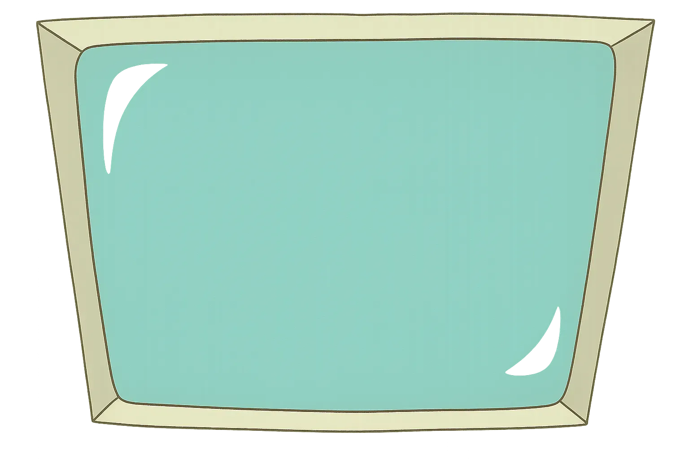

Courage the Cowardly Dog Archive

The definitive CTCD archive and lost media collection. Explore 200+ characters, episode history, rare content, and comprehensive research about John R. Dilworth's masterpiece from Cartoon Network.
Nowhere Kansas - Courage's Home
Nowhere is the mysterious fictional town in Kansas where all Courage episodes take place. Watch as Courage protects his family from supernatural creatures in this spooky setting.
Description, Society, and Culture
Nowhere's society is sparsely populated with eccentric residents often oblivious to the strange occurrences. The town features a mix of locations, including a downtown area, industrial zones, and unique establishments like Katz Motel and the Nowhere Junkyard.
Culturally, it's a magnet for the paranormal, with frequent encounters with ghosts, aliens, and otherworldly creatures, creating a blend of the mundane and supernatural.
Times Nowhere Was in Trouble
- • Terrorized by the evil Shadow
- • Attacked by Dr. Zalost's tower, turning citizens sad
- • Fell victim to the Curtain of Cruelty, causing chaos
- • Downtown destroyed by teddies searching for the Tulip Worm
- • Citizens brainwashed by the King of Flan
- • Completely flooded in "A Beaver's Tale"
- • William the dragon ran rampant
- • Destroyed by a giant starfish summoned by Shirley
Outskirts of Nowhere
- • Bagge Farmhouse
- • Burgers Really Cheap Diner
- • Sweet Stuff Bakery
- • Ma Bagge's Trailer
- • Katz Motel
- • Nowhere Forest
- • Shirley's Wagon
- • Nowhere Bazaar (County Fair)
- • Nowhere Bank
- • Cajun Fox's Cave
- • Antique Quilt Shop
- • Gerhart's House
- • Mount Nowhere
- • The Old Cruel Rich Guy's Observatory
Downtown of Nowhere
- • Rob's Shop
- • Dil's General Store
- • Central Park
- • William's Meat & Salami
- • Nowhere Movie Theater
- • Library
- • Katz Kandy
- • Kev's Curio
- • Cruel Veterinarian's Office
- • Nowhere Hospital
- • Nowhere Town Hall
- • Nowhere TV Studio
- • Nowhere Wet World
- • Merlino's Famous Ice Cream Shop
- • Experimental Institute
- • Asylum Home for Freaky Barbers
- • Nowhere Museum
- • Growth Industries
- • Police Station
- • Silhouette Maker's Fair
Industrial Area
- • The Wrong Side of the Tracks
- • Charlie's Diner
- • Nowhere Junkyard
- • The Swamp
- • Nowhere Train Station
- • Military Base
Trivia
- • Nowhere's exact location in Kansas was confirmed in "Courage the Fly"
- • The phrase "middle of Nowhere" likely references Kansas being the most central U.S. state
- • The word "Nowhere" can also be read as "Now Here"
- • Its desert-like landscape might be an allusion to Toto and Dorothy from The Wizard of Oz
The Inhabitants of Nowhere
Meet the central trio of the series. Their unique and often contradictory personalities are the emotional core of the show, driving the narrative and its exploration of complex themes like fear, love, and trauma.
Courage
The Paradoxical Hero
Muriel Bagge
The Kindhearted Naif
Eustace Bagge
The Grumpy Antagonist
All Characters
Explore the complete cast of characters from Courage. Search through over 200 unique characters, from main protagonists to one-time villains and mysterious creatures.
| Character | Role / Description | Appearance | Behavior |
|---|
CTCD Lost Media & Archive History
Courage the Cowardly Dog has a rich history of lost media, deleted scenes, and rare content. This archive documents the show's production history and preserves information about missing materials from the CTCD universe.
Lost Episodes & Deleted Scenes
- • "The Chicken from Outer Space" - Original 1996 pilot short
- • Deleted scenes from various episodes due to content concerns
- • Extended versions of episodes that were cut for time
- • Alternative endings and unused storylines
- • Concept art and early character designs
- • Storyboards for unproduced episodes
Rare CTCD Materials
- • Production notes from John R. Dilworth's archives
- • Voice actor outtakes and behind-the-scenes recordings
- • Promotional materials from Cartoon Network
- • International versions with different content
- • Merchandise prototypes and unreleased products
- • Fan-made content from the early internet era
Series Archive Information
Courage the Cowardly Dog (CTCD) originally aired for 4 seasons from 1999 to 2002, with a total of 52 episodes. This archive preserves the show's history, including rare materials and lost content that showcases the evolution of John R. Dilworth's creation.
Created by: John R. Dilworth
Network: Cartoon Network
Genre: Animated Horror Comedy
Setting: Nowhere, Kansas
Archive Status: Actively preserving lost media and rare content
This CTCD archive serves as a historical repository for fans and researchers interested in the show's production history, lost media, and cultural impact. We document and preserve information about missing materials while respecting copyright.
For official episodes, please support the creators through licensed streaming services like HBO Max, Amazon Prime Video, or other authorized platforms.
Episode History & Documentation
Complete documentation of Courage the Cowardly Dog's episode history, production timeline, and archival information. This database preserves the chronological history of the CTCD series.
Production Timeline
Season 1 (1999-2000)
13 episodes introducing the core characters and establishing the show's unique horror-comedy tone in Nowhere, Kansas.
Season 2 (2000-2001)
13 episodes expanding the mythology and introducing memorable villains like Katz and King Ramses.
Season 3 (2001-2002)
13 episodes featuring some of the series' most acclaimed episodes and character development.
Season 4 (2002)
13 episodes concluding the original series run with memorable finales and character resolutions.
Rogues' Gallery
Nowhere is a magnet for the bizarre. Hover over a card to learn about some of the most memorable and terrifying villains Courage has ever faced. Their designs and motivations often reflect deep psychological horror.
Allies & Companions
Not everyone in Nowhere is a threat. Meet the helpful characters who assist Courage and the Bagges, from the sarcastic Computer to kind-hearted neighbors and mystical beings.
Unsettling Sights & Sounds
The show's unique atmosphere is a product of its experimental visuals and innovative sound design. It blends different animation styles and uses a "from scratch" musical score to create a truly uncanny experience.
Visual Palette
Creator John R. Dilworth drew from a wide range of influences, including German Expressionism and Surrealism. The show famously mixes traditional animation with unsettling CGI, live-action footage, and stop-motion to make the supernatural threats feel alien and real.
CGI
(e.g., King Ramses)
Live-Action
(e.g., The Harvest Moon)
Stop-Motion
(e.g., various creatures)
Expressionism
(e.g., Distorted shapes)
Sonic Landscape
Composers Jody Gray and Andy Ezrin created a unique score for nearly every episode, avoiding repetitive cues. The music often plays against the visuals to heighten tension and features distinct, memorable themes for many villains.
Thematic Depths & Enduring Legacy
Beneath the horror and comedy, the series explores profound ideas about the human condition and has earned significant critical acclaim. It challenged the norms of children's television and continues to resonate with audiences today.
Core Themes
Love & Courage
Empathy for the Monstrous
Psychological Horror
Critical Acclaim
A visualization of the show's major award nominations and wins.